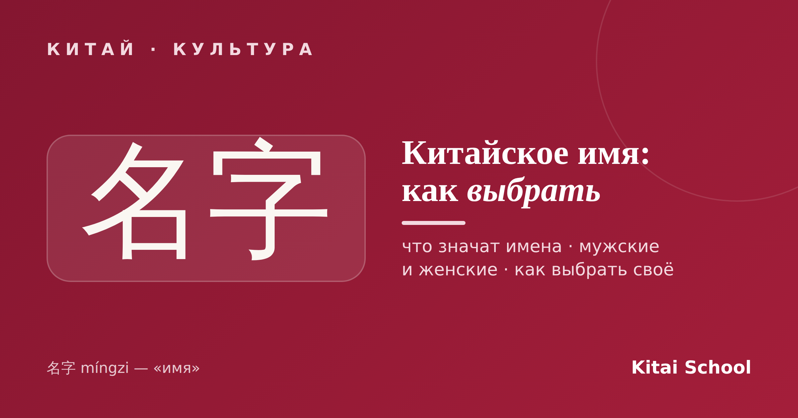
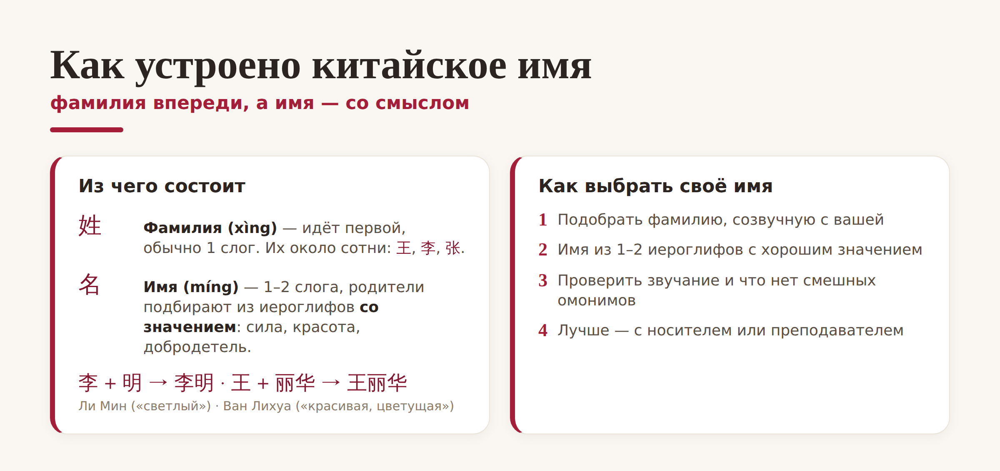
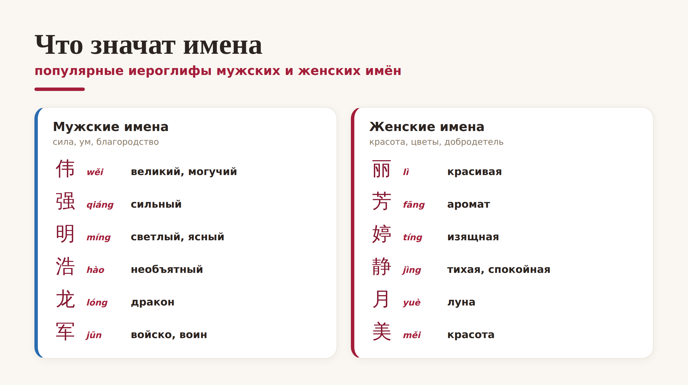

Китай · культура

Почти каждый, кто начинает учить китайский, рано или поздно хочет себе китайское имя. И это не просто игра: китайские имена и значения — целый мир, где за парой иероглифов стоит характер, пожелание и родительская мечта. Разберём, как устроены имена, что они означают и как выбрать китайское имя себе.
Первое, что удивляет: в Китае фамилия идёт первой, а имя — после. Само слово «имя» — 名字 (míngzi). Фамилия (姓, xìng) обычно состоит из одного слога, а имя (名, míng) — из одного или двух, и его не выбирают из готового списка, а составляют из иероглифов со смыслом.

Из-за этого китайские имена почти не повторяются: сочетаний иероглифов бесконечно много. Распространённых фамилий, наоборот, всего около сотни — 王 (Ван), 李 (Ли), 张 (Чжан) и другие носит огромная часть страны. Поэтому по-настоящему «личное» в китайском имени — именно имя, а не фамилия.
Смысл иероглифов в имени обычно подчиняется негласной логике. мужские имена чаще про силу, ум и благородство, а женские имена — про красоту, цветы и добродетель:

Мужские имена часто включают 伟 (wěi, «великий»), 强 (qiáng, «сильный»), 龙 (lóng, «дракон»). Женские имена — 丽 (lì, «красивая»), 芳 (fāng, «аромат»), 月 (yuè, «луна»). При этом жёсткого деления нет: многие иероглифы вроде 明 «светлый» подходят и мужчинам, и женщинам. Часто имя ещё и отражает время рождения или надежды семьи.
А теперь главное — как выбрать китайское имя, если вы иностранец. Плохая идея — просто перевести своё имя «в лоб» или взять первое попавшееся из интернета. Хорошее китайское имя подбирают по нескольким правилам:
Фамилия — созвучная вашей. Обычно берут китайскую фамилию, похожую по звучанию на вашу настоящую (например, для «Ани» — 安 Ān).
Имя — из 1–2 иероглифов с хорошим значением. Красивый смысл важнее буквального перевода: пусть имя звучит как настоящее китайское, а не как ребус.
Проверьте звучание. Убедитесь, что имя не превращается в смешной или неловкий омоним, — это частая ошибка новичков.
Совет. Не выбирайте имя в одиночку по онлайн-генератору: он не слышит нюансов. Лучше подобрать китайское имя вместе с носителем или преподавателем — тогда оно будет и красивым по смыслу, и естественным на слух. Это маленький, но очень приятный шаг в мир языка.
Вот и всё: фамилия впереди, имя — из значимых иероглифов, а китайские имена и значения складываются в целую маленькую историю о человеке. Захотите своё — выбирайте вдумчиво, и оно будет радовать вас годами.
Красивого вам имени! 名副其实。